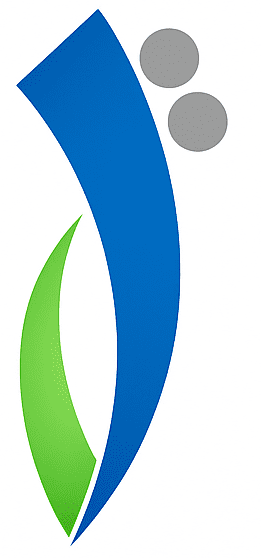

Shams Academyأكاديمية شمس

Shams Raed Felfelشمس رائد فلفل
University College of Applied Sciences — UCAS الكلية الجامعية للعلوم التطبيقية
Seven courses, one app. سبع مواد، تطبيق واحد.
Install this page once and every course opens inside it — no separate app per subject. Save only the courses you need; each one can be removed again without touching the others. ثبّت هذه الصفحة مرة واحدة لتُفتح كل المواد داخلها — دون تطبيق منفصل لكل مادة. احفظ ما تحتاجه فقط؛ ويمكن إزالة أي مادة دون المساس بالبقية.